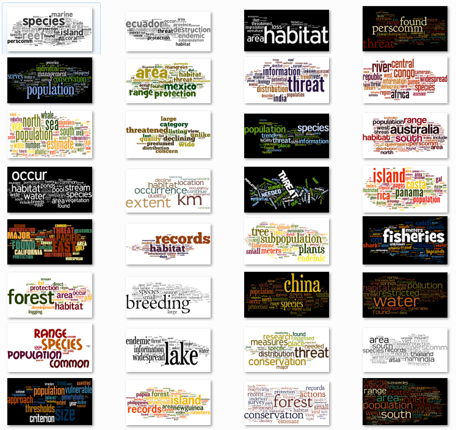
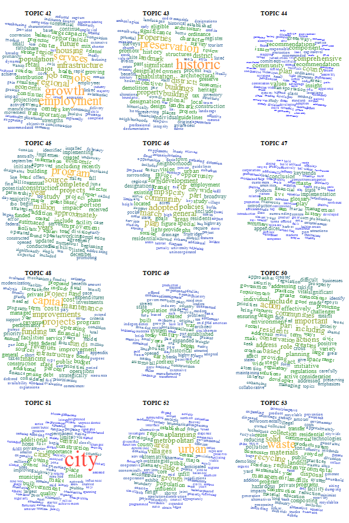
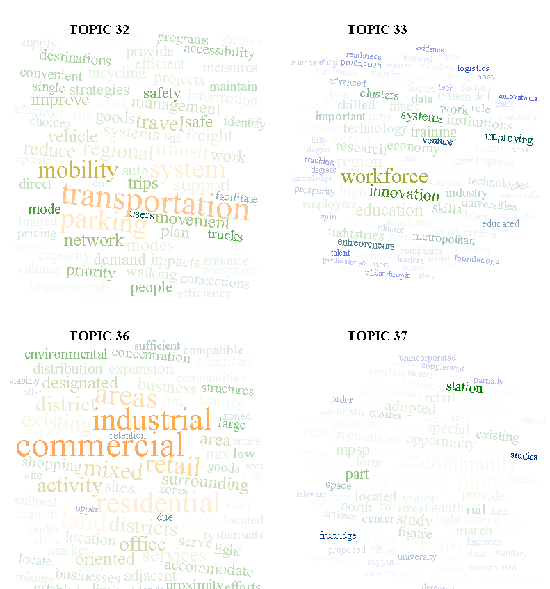

A year ago, I painstakingly formatted the topic modeling results from MALLET so that I could paste them, one by one, into Wordle. I was happy with the results, if not the workflow:

First, an aside. There are folks who consider word clouds to be heinous data visualizations, especially now that Wordle has made them so easy. It seems to me that to establish your data visualization credibility, you have to trash some particularly popular form of expressing information. Ben Fry famously trashed networks, Jacob Harris trashes word clouds, Tufte trashed circles. I’m sure somebody out there hates bar charts and everyone, it seems, thinks stream graphs are made out of equal parts heroin and the bad stuff from The Fifth Element. But it actually shows a lack of understanding of the primary principal of data visualization to condemn a form, and though it makes for better copy to declare word clouds to be “harmful” or say that “almost nothing” should be shown as a network, it’s really the application and not the method that is being criticized. Word clouds, for instance, are really good when paired with topics generated from topic models.
For those of you who are unfamiliar with topic modeling, it’s a family of algorithms that look at a set of documents to find words that are highly co-located across documents. There have been many and varied explanations of it, including my own visual representation of it*. Typically, the results of a topic model are a list of the top words that appear in a particular topic. But a simple list of words hides the fact that the ratio of words is another dimension that is important for understanding topics. Hence word clouds. While the typical use of something like Wordle is to drop in a document and let it count the instances of words, you can also format a list of words and values and it will generate the same cloud. Easily enough, one of the outputs of topic modelling software like MALLET is just such a list for every topic discovered. And so a topic cloud represents not only the words that make up a topic, but the ratio of those words, and can include just the top 20, or the top 100, or all of them if you have the real estate.
You can see in the example above that sometimes terms dominate a topic, and other times there is a more even spread of terms, and all the rest of the distributions of tokens that one would expect from such statistical processing. By exposing this distribution, it makes interpretation of topic model results far more sophisticated.
Now, back to the workflow problem. This kind of solution is great, but formatting the results and manually inputting them into Wordle and setting the color scheme and layout and font to be the same every time is miserable. On top of that, it abdicates the capacity to use the various dimensions of a word cloud to pass more information in the visualization. Color and rotation are arbitrary in Wordle and typically in word clouds, but they need not be. Color could be used to indicate part-of-speech, and rotation could be used to indicate named entity type. Or, they could be used to reinforce incidence of the word. With that in mind, and given my growing addiction to the D3.js information visualization library, I thought I’d do something a bit more efficient this time. Fortunately, Jason Davies has already built an incredibly robust word cloud layout for D3, and all I had to do was use it in a ‘for loop’ for all the topics that I’d generated, with some code to color and size the words using a scale that I thought was appropriate. The result is a simple web page that easily shows word clouds made up of the top 100 tokens (or more or less, if you’d prefer) for the 100 topics in the topic model I’m using, and with significantly less carpal tunnel.

The toughest part was getting the topics in order, since D3 calls the CSVs asynchronously and therefore needs to have the 100 SVG canvases put onto the page and identified before they’re populated. But I solved that by creating the 100 SVG canvases first, giving them unique IDs based on their order in the creation, and then calling the specific canvas during the word cloud creation. You can find the code on Github here.
Updated on 8/16
I showed this code to Ryan Heuser, who runs the Literary Lab here at Stanford, and he immediately improved it by suggesting that another dimension to be represented from topic model output is the percentage of a word represented in a topic out of the total number of that word represented in a corpus. For instance, if the word “housing” shows up 10000 times in a corpus and 9000 times in a topic, then it has a different character than a word that shows up 50000 times in a corpus and 9000 times in a topic. This percentage can be represented in a number of ways, but Ryan and I found that opacity was the best, causing words that were represented across topics to recede more than words that highly corresponded to a particular topic. Here’s an example:

* Using network visualization where topics, words, and documents are all represented with circles. I know, I should be ashamed of myself.